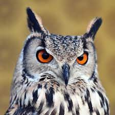
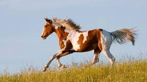
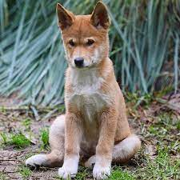
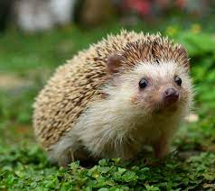
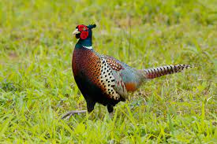
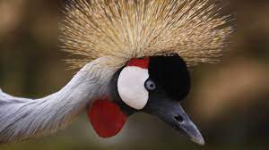
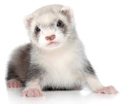
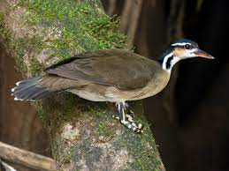
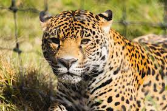
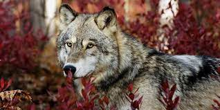

Gonzalez Silva Aaron Emiliano
Animales en lista
- A
- Ardilla
- Las ardillas son animales conocidos por todos. Unas 200 especies de ardillas viven en todo el mundo, con excepción de Australia..

- Fuente: nationalgeographic Ardilla
- B
- Buho
- ave de hábitos nocturnos y rapaz, que se caracteriza por contar con plumas que parecen orejas.

- Fuente: Definicion Buho
- C
- Caballo
- son una especie de mamífero cuadrúpedo herbívoro de la familia de los equinos, que comprende numerosas razas diferentes (alrededor de 400).

- Fuente: Concepto Caballo
- D
- Dingo
- mamífero de la familia de los lobos (canis lupus) que vive en estado salvaje en todos los estados de Australia menos Tasmania. También hay grupos aislados en el sudeste asiático.

- Fuente: tiendanimal Dingo
- E
- Erizo
- es una especie de mamífero erinaceomorfo de la familia Erinaceidae, anteriormente incluido dentro del antiguo orden Insectivora.

- Fuente: Naturalista Erizo
- F
- Faisan
- Los faisanes no son originarios de Norteamérica, sino de Asia. Se sabe que los faisanes llegaron a los EE. UU. en la década de 1770

- Fuente: fda Faisan
- G
- Grulla
- La grulla común es un ave grande y esbelta, de patas y cuello largos y de coloración general gris ceniza, más oscura hacia el extremo de las alas.

- Fuente: seo Grulla
- H
- Huron
- Alternan periodos de actividad y sueño a lo largo del día, aunque suelen ser más activos al atardecer y durante la noche.

- Fuente: vetcon Huron
- I
- Ipequi
- Es de cuerpo delgado y pequeño, típicamente de 28-31 cm de largo, y con 130 g de peso.

- Fuente: wikipedia Ipequi
- J
- Jaguar
- S es el único felino grande de América y el tercero más grande del mundo, después de los tigres y los leones.

- Fuente: nationalgeographic Jaguar
- K
- Koala
- Los koalas viven en el este de Australia, donde hay más eucaliptos; les gustan tanto estos árboles que casi nunca los abandonan. Además, gracias a sus extremidades y dedos oponibles se mantienen cómodamente sobre ellos. Los koalas pueden dormir hasta 18 horas al día, sujetos en las ramas y rincones de los árboles.

- Fuente: National Geographic Koala
- L
- Lobo
- Sus dimensiones varían considerablemente a lo largo de su hábitat, y tienden a incrementarse proporcionalmente con la latitud (regla de Bergmann).

- Fuente: Animalandria Lobo